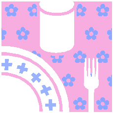

Italian Deli Salad
- ½ lb. rotini or bow tie pasta, cooked, drained
- 8 oz. Italian dressing (such as Henri's Fat Free)
- 1 c. (4 oz.) low-moisture part-skim mozzarella cheese, cubed
- ¼ c. (1 oz.) shredded parmesan cheese
- 1 can (7 oz.) artichoke hearts, drained, quartered
- 1 can (2¼ oz.) sliced pitted ripe black olives, drained
- ½ c. (2 oz.) sliced pepperoni, cut in half
- small or medium red onion, cut in thin half rings
- medium or large green bell pepper, finely diced
- optional: small red bell pepper, finely diced
Mix all ingredients. Refrigerate. Makes nearly 3 quarts (about 8 servings).